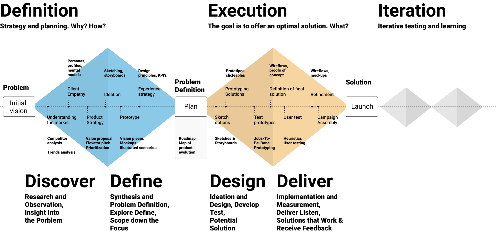
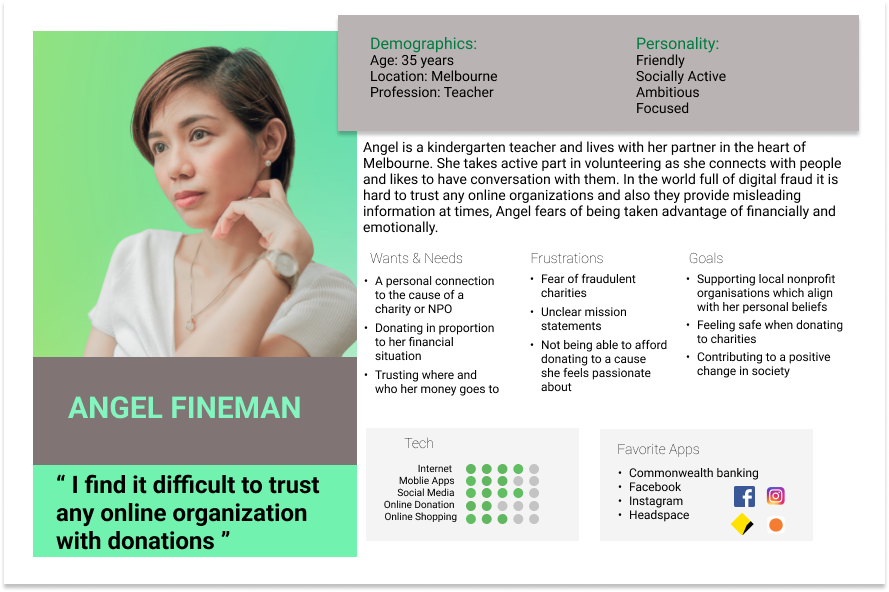
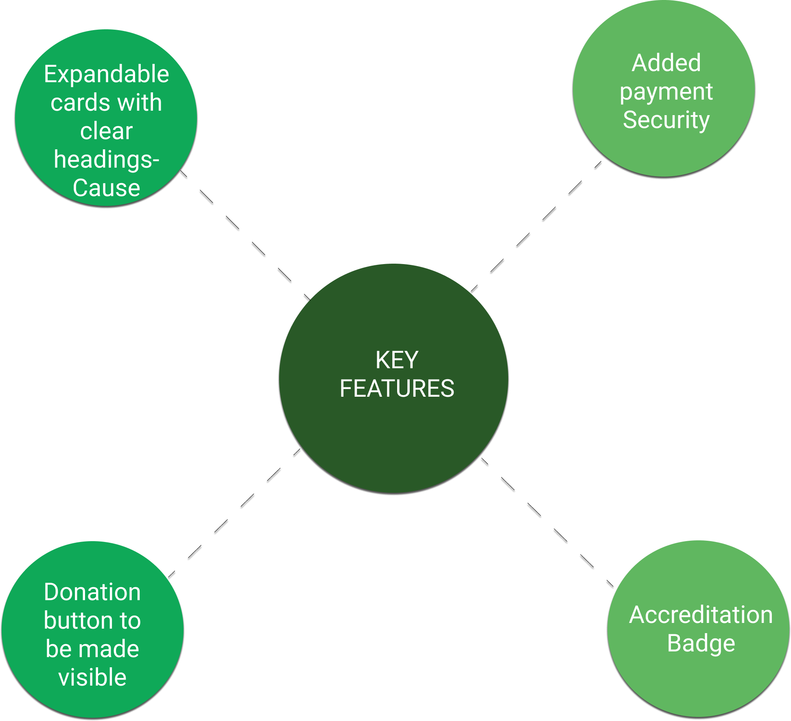
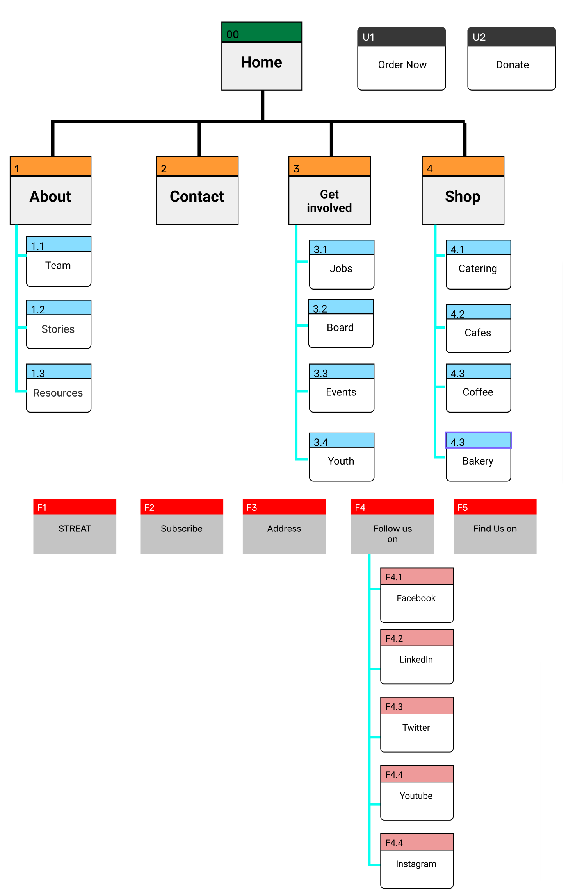
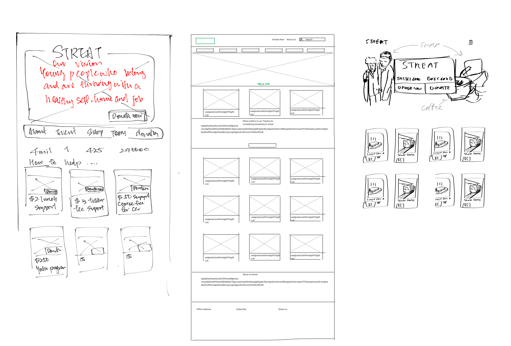
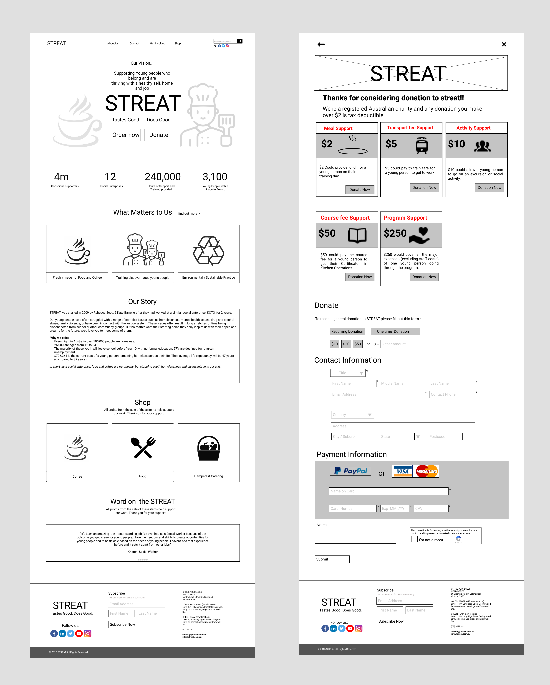
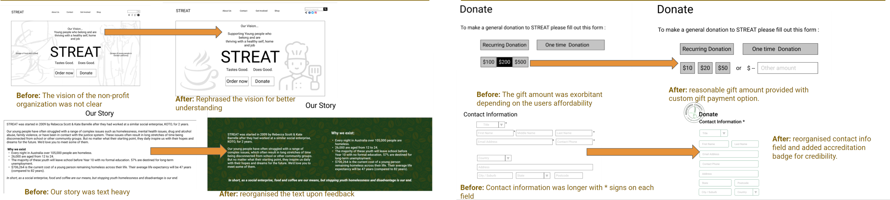
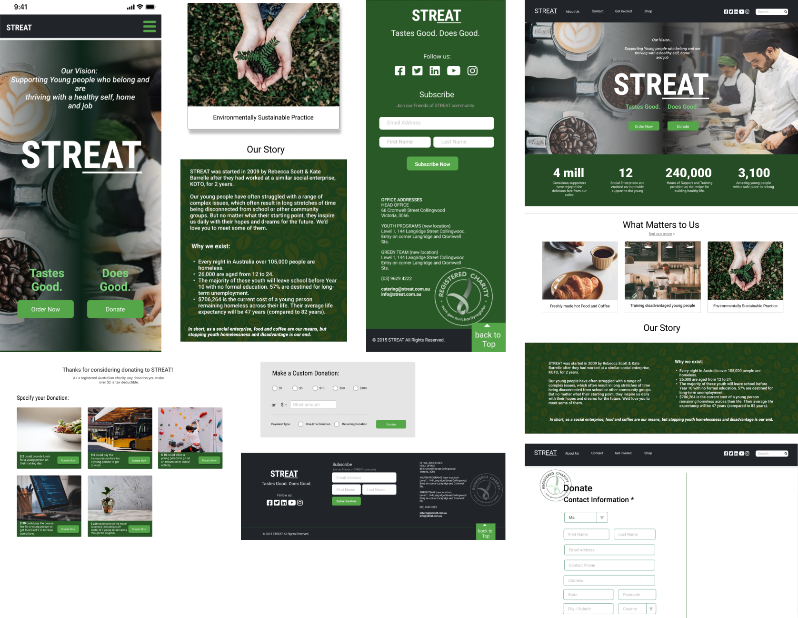

Tastes Good. Does Good
*Case study completed for academics purpose.
A number of years ago, a bunch of-mainly chefs and baristas, downed some macchiatos and got to work providing homeless and disadvantaged young people with the life skills, training and work experience they required to take a step closer to achieving some of their personal goals. The organization has been really busy over the last six years, and have built a bunch of Melbourne-based cafes, catering and coffee roasting businesses.
Across these businesses the organization collectively imparted over 7000 of hours of hospitality knowledge to over 400 young people, they are also determined that their young people should gain transferrable employability skills that would stand them in good stead in any industry. Streat is a non-profit organization working towards giving a better life to many young people.
Our team was assigned to do a group-project on a non-profit organization for the course. Our team comprised or
3 members:
- Mona Wong
- Shuchi Kori
- Vinita Prabhu
Miro, Figma, Trello, Google forms, Slack, Zoom
The project was completed in 3 weeks and was divided into 3 phases. Phase 1: We as a group discussed on the organization and started with research process. Phase 2: The team gathered all the information got from the research and started with Ideation and brainstorming. Phase 3: The information gathered were then converted to Low-Mid-High prototype.
We kick started the project by discussing about the non-profit organization we would like to study about. We mutually agreed on STREAT, as the organization worked towards giving better life opportunities to young disadvantaged homless youth.The main goal was to make people aware about the great cause the organization is working for and understand more about STREAT from the team and users visiting the cafe. We followed the double-diamond process.
We wanted to target 3 sets of people; 1. People who were employed at STREAT so that we can get some insights and functioning of the organization. 2. People who visited STREAT cafe- to know from them if they were aware about the cause. 3. People who were actively part of some organization or charity program and their pain points while donating.
We as a team created research questionnaires for different sets of people. We conducted 6 user interviews- users who were aware and unaware about STREAT. The unaware users were shown the website to get their view.
Our Research Objectives were:
> To understand people's general behaviour and attitude around donating.
> To understand people's driving factor of supporting STREAT.
We also conducted market survey through google forms with 17 responses for further studying about people's behaviour and approach towards donating to a non-profit organization .
During our user interviews we came accross that there was a fear of being taken advantage of emotionally and financially while donating online to any organization, making it hard to trust without visible credibility. Market research showed that STREAT's largest source of revenue came from goods and services, with donations trailing behind.
With all the information gathered through our research, we obtained the following persona:
People who are passionate about providing better employment opportunities for disadvantaged young people need to feel fully secure when considering an online donation. We have observed that potential supporters feel a sense of duty and obligation to support causes they have a personal connection to, which demands a high need for transparency, clarity and credibility.
How might we instill confidence and safety for such people considering donating to STREAT?
We got our key features from I like, I wish and What If Method.
As the purpose of the redesigning of the website was to highlight the Donation information to showcase the cause STREAT is working towards.
By card sorting we then finalized Site Map after making necessary modifications to the Site Map.
For the next phase we started sketching wireframes for redesigning website incorporating the key features obtained.
We converted our sketches to mid-fidelity wireframes that also served as a base for our user testing.
We then conducted user test on our mid-fidelity prototype and the key findings were as follows
After the key findings received from user testing we made alterations to the prototypes and then started with hi-fidelity prototype for desktop and mobile app.
The main objective of redesigning the website was to highlight the purpose of the non-profit organization to gain more donation that would help more disadvantaged youth to improve their career and achieve success in life. A great initiative by STREAT to not only work for good cause but also protect mother earth by recycling.